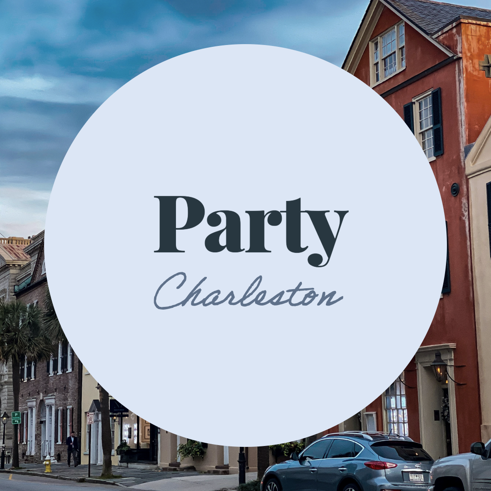
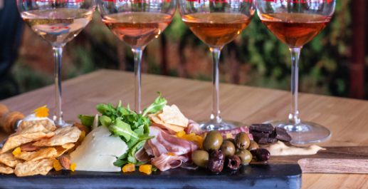
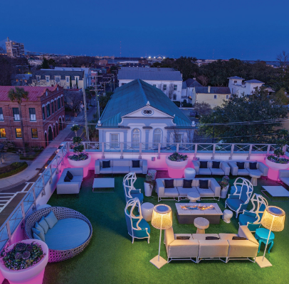

Charleston Adult Birthday Party Ideas

Turning 21, 30, 40, 50 or just another year older, Charleston has the businesses to cover the whole celebration: something to do in the afternoon, a private room for dinner, a cake, and a night out after. This guide works for any group, from a handful of close friends to a crowd of coworkers.
Group Activities for a Grown-Up Birthday
Competitive groups should start in North Charleston. Topgolf Charleston, behind the North Charleston Coliseum, has more than 70 climate-controlled hitting bays, and nobody needs to know how to swing a club to have fun. A few miles away in Park Circle, The Bearded Ax pairs axe-throwing lanes with a golf simulator, pinball, pool, and skee-ball, and it hosts private events. Next Round Social on Dorchester Road puts duckpin bowling, axe throwing, and tech-driven mini golf under one neon roof, with private party rooms that include a VIP space with its own four lanes.
East of the Cooper, MIX on Coleman Boulevard in Mount Pleasant has duckpin bowling, axe throwing, darts, and a full bar, and it goes 21 and up after 7 p.m. Call ahead, since the whole space can be rented out for parties. On James Island, iSmash runs rage rooms, black-light splatter paint, and axe throwing for groups up to 15, which works well for a birthday where the guest of honor has had a long year.
For a group that would rather sit back and laugh, book seats at Theatre 99 on Meeting Street. The improv shows run Wednesday through Saturday at 8 p.m., they are built on audience suggestions, and they are rated R. Theatre 99 also books private shows. For a bigger name, check the calendar at the Charleston Music Hall. Arcade fans can take over a corner of Pinky & Clyde's in Park Circle, a dive bar full of '80s and '90s cabinets, or The Break on Folly Road, which has one of the bigger pinball lineups in town plus darts and pool.
Food-focused groups can cook their own dinner at Chef's Collective in West Ashley, which runs private classes for birthdays, or take a guided tasting with Charleston Culinary Tours. Puzzle solvers can book a room at Charleston Escape Games, and a Candlefish candle-making class on King Street sends everyone home with a party favor. A harbor cruise is an easy choice in warm months. Our Charleston boat charters guide lists private boats by group size, and our experiences directory has more bookable group activities.
Private Dining Rooms for the Birthday Dinner
A private room makes dinner feel like a party and keeps toasts from bothering the next table. Circa 1886 on Wentworth Street has a Garden Room for 8 to 12 and the upstairs Tack Room for up to 40, which has two original fireplaces. At Peninsula Grill, the Charleston Room seats 32, and the courtyard works for a cocktail hour. Finish with a slice of the coconut cake. Magnolias on East Bay Street has a Wine Room for up to 24 with a bay window over the historic district. For a classic steak dinner, book Oak Steakhouse on Broad Street.
For a louder table, Mesu on Upper King serves tacos and sushi and has a gong for celebrations, and it handles large parties and full buyouts. Oysters and something bubbly at The Ordinary make an easy shared order for a group that likes to graze.

Breweries and Bars With Party Space
For a casual, come-and-go birthday, a brewery is hard to beat. Holy City Brewing in North Charleston has five event spaces, including an open-air mezzanine over the bar for up to 65 people and a speakeasy room. Edmund's Oast on Morrison Drive books private rooms like The Library, which seats 32 and serves family style. Downtown, Charleston Beer Works rents its upstairs bar on King Street for birthday get-togethers, and Republic Garden & Lounge takes table reservations for bigger groups that want DJs later in the night.
Hosting at a rental house or backyard instead? Southern Soirée handles decor and custom cookies, and Bienvenue Charleston can set up balloon garlands and backdrops and stock the fridge before guests arrive.
Birthday Cakes From Local Bakeries
Ashley Bakery on Savannah Highway is the longtime West Ashley choice for custom cakes, and it can handle gluten-free orders. Cakes by Kasarda in North Charleston and The Cake Stand on Folly Road both make one-off custom designs, so order early for a themed cake. For something easy to pick up on the way, Nothing Bundt Cakes in West Ashley sells bundt cakes in party sizes. Ask the restaurant about its cake-cutting fee before you bring one to dinner.

A Birthday Night Out Downtown
Start with sunset drinks on one of the Charleston rooftop bars, then work up King Street. The Bangkok Lounge does karaoke seven nights a week, John King Grill has dueling pianos Wednesday through Saturday and the players love a birthday request, and The Commodore is the dance floor for the last round. Bars close at 2 a.m., so plan a stop from our late-night food guide before heading home. The full route is in our King Street bar crawl, and the Charleston party scene guide covers clubs and live music across town.

All picks are our own. No business paid to be featured on this page. Bars and nightlife venues listed are 21+.
Getting the Group Around
Downtown parking is tight, and a birthday night is no time to pick a designated driver. Uber and Lyft handle short hops between dinner and the bars, and the free DASH shuttle loops the peninsula during the day. To keep a larger group together, book a private driver or party ride with Charleston Black Cab Co.
More Charleston Party Guides
This guide is part of Party Charleston, our local guide to nightlife and celebrations around the Holy City. Planning a different kind of party? See girls night out, college formals and the college scene, and the Charleston bachelorette party guide. Celebrating with a younger crowd? Start with Charleston nightlife under 21.